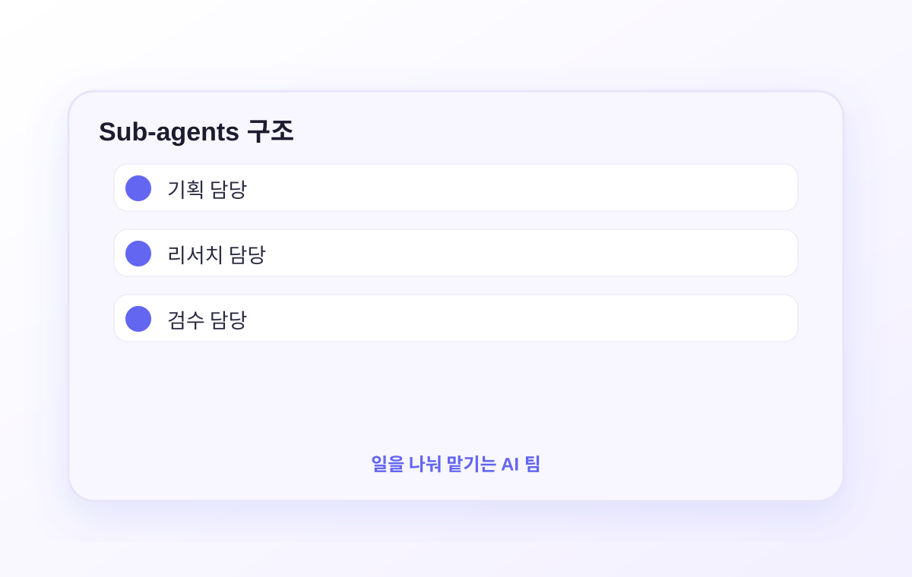
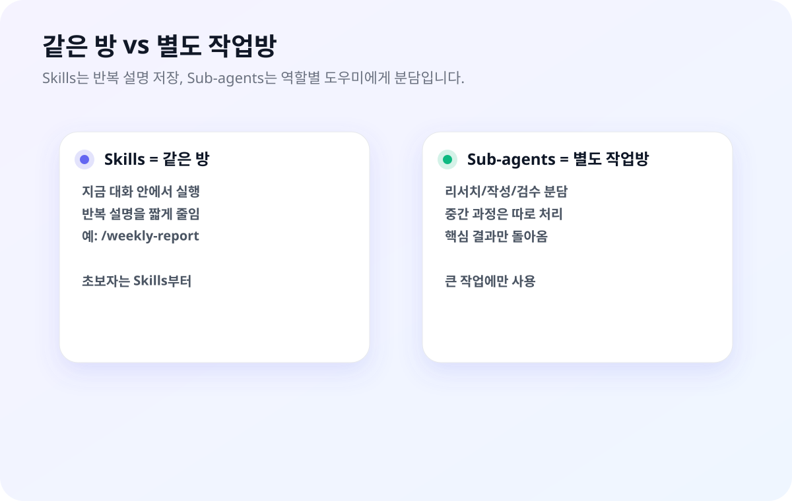

혼자서 처리하기엔 많은 자료나 여러 작업이 있을 때, Sub-agents는 역할별 AI 도우미에게 일을 나눠 맡기는 방식입니다. 리서치, 작성, 검수처럼 역할을 나눌 때 유용합니다.
Sub-agents는 AI 팀원에게 나눠 맡기는 구조입니다
리서치, 작성, 검수처럼 역할이 나뉘는 작업에서 유용합니다.

쉽게 말하면: 한 명에게 다 시키는 대신, 역할별 AI 팀원에게 나눠 맡기는 방식입니다.

선택 기준: 반복 설명은 Skills, 큰 작업 분담은 Sub-agents입니다.
팀장-팀원 비유
Sub-agents는 직장 팀 구조와 정확히 같습니다:
🧠 메인 Claude (팀장)
↙ ↓ ↘
리서치 에이전트
번역 에이전트
검토 에이전트
↙ ↓ ↘
각 에이전트가 독립적으로 작업 → 결과를 메인에게 보고
팀장(메인 Claude)이 전체 계획을 세우고 팀원(서브에이전트)에게 각자 맡은 일을 줍니다. 팀원들은 독립적으로 일하고, 결과만 팀장에게 보고합니다.
일반 대화와 Sub-agents의 차이
일반 Claude
혼자서 모든 걸 처리합니다. 방대한 자료는 대화창을 가득 채우고, 순서대로 처리하니 시간도 오래 걸립니다.
Sub-agents
여러 Claude가 동시에 다른 일을 처리합니다. 서브에이전트의 방대한 중간 작업이 메인 대화에 길게 쌓이지 않습니다.
Sub-agents가 생기면 가능해지는 것
⚡ 병렬 처리
경쟁사 A, B, C를 각각 다른 에이전트가 동시에 조사. 순서대로 하면 3배 시간 걸림.
🧹 깔끔한 대화창
서브에이전트의 방대한 탐색 로그가 메인 대화에 쌓이지 않음. 핵심 결과만 돌아옴.
🎯 역할 분리
리서치 전담, 번역 전담, 검토 전담 에이전트. 각자 맡은 역할만 함.
Skills vs Agents — 뭘 언제 쓸까?
7편에서 Skills를 배웠습니다. 그런데 Skills랑 Sub-agents는 둘 다 "Claude에게 특정 작업을 맡기는" 방식처럼 보이죠. 사실 결정적으로 다릅니다. 컨텍스트 윈도우를 공유하느냐, 분리하느냐의 차이입니다.
핵심 차이 — 같은 방 vs 다른 방
두 기능의 본질적 차이는 "Claude가 일할 공간(컨텍스트)을 어떻게 쓰느냐"에 있습니다. 앤트로픽 공식 문서를 바탕으로 정리하면:
⚡
Skills
🧠 메인 대화방
Skill 내용이 대화에 그대로 추가되어 같이 이어서 진행
🤖
Sub-agents
🧠 메인 방 → 🚪 별도 방
에이전트는 독립된 방에서 혼자 일하고 결과 요약만 들고 옴
한 줄 정리: Skills는 "대화를 이어서 같이 한다", Sub-agents는 "일을 맡기고 보고만 받는다". 이 차이가 언제 무엇을 쓸지 전부 결정합니다.
자세히 비교
항목
⚡ Skills (7편)
🤖 Sub-agents (8편)
컨텍스트 윈도우
메인 대화와 공유
독립된 별도 윈도우
이전 대화 참조
✅ 그대로 이어서 가능
❌ 전달한 지시만 알고 시작
중간 개입
✅ "잠깐, 이 방향 말고"
❌ 독립 실행 (끝나야 개입 가능)
병렬 실행
❌ 순차 (한 번에 하나)
✅ 여러 개 동시 실행
도구 제한
메인과 동일
✅ 에이전트별로 제한 (read-only 등)
토큰 비용
메인 예산에 포함
에이전트마다 별도 소모
대화창 복잡도
Skill 내용이 대화에 쌓임
✅ 중간 로그는 격리, 요약만 반환
⚡ Skills가 맞는 상황
"지금 이 대화를 같이 이어서 하고 싶다"는 느낌이면 Skills입니다.
✅ 반복 플레이북 실행
"주간 보고서 써줘" → 형식 정해진 작업을 매번 동일하게. 작성 후 내가 "여기 이 문장 바꿔줘"로 이어서 수정.
✅ 협업하며 다듬는 작업
회의록 초안을 만든 뒤 "액션아이템에 우선순위 추가해줘"처럼 계속 대화하며 완성하는 경우.
✅ 이전 맥락이 중요한 작업
오전에 논의한 기획 방향을 그대로 이어서 문서화. Skills는 기존 대화 내용을 전부 볼 수 있음.
✅ 참조 자료 가이드
"우리 팀 브랜드 톤 가이드를 따라서 써줘" 같은 가이드라인을 매번 주입.
🤖 Sub-agents가 맞는 상황
"이 일은 따로 맡겨두고 결과만 받고 싶다"는 느낌이면 Sub-agents입니다.
✅ 대용량 출력 격리
PDF 50개 스캔, 로그 파일 수천 줄 분석 등 중간 과정이 방대한 작업. 요약 5줄만 메인에 돌아오게.
✅ 병렬 독립 조사
경쟁사 A, B, C를 동시에 분석. 각 에이전트가 서로 모르고 독립적으로 조사 → 최종 취합.
✅ 도구 제한이 필요한 역할
검토 전담 에이전트는 Read만 허용. 수정 자체가 불가능하니 안전. (7편 Skills로는 불가능)
✅ 일관된 역할 재사용
"리서처", "번역가", "QA 검토자" 같은 페르소나와 시스템 프롬프트가 고정된 전문 역할.
판단 플로우차트
Q1. 이 작업 결과를 받은 뒤에, 내가 계속 대화하며 다듬을 건가?
→ 그렇다 = ⚡ Skills
→ 아니다, 완성된 결과만 받으면 됨 → Q2로
Q2. 중간 과정이 방대하거나, 동시에 여러 개 처리하거나, 도구 제한이 필요한가?
→ 그렇다 = 🤖 Sub-agents
→ 아니다 = ⚡ Skills도 충분
Sub-agents를 먼저 쓰지 마세요. 공식 가이드도 "Skills를 기본으로 쓰고, 중간 출력이 메인 대화에 길게 쌓이거나 병렬 처리가 필요할 때 Sub-agents를 도입"하라고 권합니다. 초반에는 Skills로 대부분 해결됩니다.
내장 에이전트 — 이미 쓰고 있었습니다
Claude Code에는 기본 에이전트 3개가 내장되어 있습니다. 따로 설정하지 않아도 이미 돌아가고 있습니다:
🔍 Explore
파일 탐색 전담. 폴더를 뒤지고 코드를 검색합니다. 탐색 결과 로그가 메인 대화에 길게 쌓이지 않습니다.
📋 Plan
Plan 모드에서 작동. 계획 수립에 필요한 자료를 수집합니다.
🤖 general-purpose
복잡한 다단계 작업 처리. Claude가 필요하다고 판단하면 자동으로 사용합니다.
나만의 에이전트 만들기
비개발자는 에이전트 파일을 직접 쓰는 것보다, Claude Code에게 “이런 역할의 에이전트를 만들어줘”라고 시키는 편이 훨씬 쉽습니다.
먼저 이렇게 시키세요
아래 문장을 그대로 붙여넣으면 Claude가 필요한 에이전트 파일을 알아서 만들거나, /agents 메뉴로 안내합니다.
Claude Code에 붙여넣기
내 프로젝트에 사용할 에이전트 3개를 만들어줘.
나는 코딩을 잘 모르니까, 필요한 파일과 폴더는 네가 만들어줘.
1. researcher: sources/ 폴더 자료를 읽고 핵심 요약과 근거를 정리
2. translator: 문서 구조를 유지하면서 한국어/영어 번역
3. editor-qa: 최종 문서의 오탈자, 링크, 표기 통일 점검
각 에이전트는 언제 자동으로 쓰이는지 description을 잘 써주고,
위험한 쓰기 작업은 하지 않도록 필요한 도구만 허용해줘.
만든 뒤에는 내가 어떻게 부르면 되는지 예시까지 알려줘.
이 편의 핵심
에이전트 문법을 외우는 게 아니라, Claude에게 “역할을 나눠 맡길 팀원을 만들어줘”라고 말하는 법을 익히는 것입니다.
Claude가 내부적으로 만드는 파일 구조
에이전트 파일 기본 구조
---
name: researcher ← 에이전트 이름
description: 자료를 조사해서 핵심 요약을 만들어줍니다. 리서치가 필요할 때 자동 사용.
tools: Read, Grep, Glob ← 허용 도구 (생략하면 모두 허용)
model: sonnet ← 사용 모델 (haiku는 저렴, opus는 강력)
---
여기에 이 에이전트의 역할과 작동 방식을 적습니다.
📁 저장 위치
~/.claude/agents/ — 모든 프로젝트에서 사용 .claude/agents/ — 이 프로젝트에서만 사용
⚡ /agents 명령어
Claude Code에서 /agents를 입력하면 인터랙티브 메뉴로 에이전트를 만들 수 있습니다. 직접 파일 만들기보다 쉽습니다.
비개발자를 위한 에이전트 3종 세트
위 프롬프트를 실행하면 Claude가 이런 역할의 에이전트를 만들어줍니다. 아래 파일 내용은 직접 외우기보다 “결과 확인용”으로 보세요:
🔍 리서치 에이전트 (researcher)
자료 폴더를 읽고 핵심 요약, 인사이트, 다음 질문을 정리합니다.
~/.claude/agents/researcher.md
---
name: researcher
description: 자료를 조사해서 핵심 요약을 만들어줍니다. 리서치가 필요할 때 자동으로 사용.
tools: Read, Grep, Glob
model: sonnet
---
당신은 리서치 어시스턴트입니다. 주어진 폴더나 파일을 읽고:
1. 결론을 먼저 5줄로 요약
2. 근거가 되는 핵심 문장을 파일명과 함께 표기
3. "추정/가정"은 명확히 라벨링
4. 마지막에 "다음에 조사할 질문" 3개 제안
항상 출처를 포함하고, 확실하지 않은 정보는 "확인 필요"로 표시하세요.
🌐 번역 에이전트 (translator)
파일이나 문장을 지정 언어로 번역하고 마크다운 구조를 유지합니다.
~/.claude/agents/translator.md
---
name: translator
description: 파일이나 텍스트를 번역합니다. 번역이 필요할 때 자동으로 사용.
tools: Read, Write
model: sonnet
---
번역 규칙:
- 고유명사, 제품명, 코드, 명령어는 원문 유지
- 마크다운 표, 목록, 링크 구조 유지
- 어조: 친절하지만 과장 없이
- 번역 결과만 출력 (설명 없이)
✅ 검토 에이전트 (editor-qa)
최종 문서의 오탈자, 표기 통일, 링크 누락을 점검합니다.
~/.claude/agents/editor-qa.md
---
name: editor-qa
description: 완성된 문서의 품질을 점검합니다. 최종 검토가 필요할 때 자동으로 사용.
tools: Read, Grep, Glob
model: haiku
---
점검 체크리스트:
- 날짜/숫자 표기 통일 확인
- 오탈자, 띄어쓰기 오류 감지
- 링크(http/https) 형식 점검
- "다음 액션"이 빠진 문서에 추가 제안
수정이 필요한 항목만 목록으로 출력하세요. 이상 없으면 "검토 완료: 이상 없음".
model: haiku를 쓰면 비용이 훨씬 저렴합니다. 단순한 검토나 포매팅 작업은 haiku로 충분합니다. 복잡한 분석이나 긴 리서치는 sonnet을 씁니다.
/agents 명령어로도 만들 수 있습니다
Claude가 안내하는 대신 직접 메뉴로 들어가고 싶다면, Claude Code에서 /agents를 입력하면 됩니다:
Claude Code에서
/agents
사용 가능한 에이전트 목록 표시
+ "Create new agent" 선택 → 인터랙티브 생성 메뉴
이름, 설명, 허용 도구, 모델을 순서대로 선택
메뉴를 따라가면 파일을 직접 작성하지 않고도 에이전트를 만들 수 있습니다.
실용 예시
에이전트를 만들었다면 어떻게 쓰나요? 자연어로 지시하면 됩니다.
예시 1: 병렬 경쟁사 분석
경쟁사 3곳을 동시에 분석합니다. 순서대로 하면 3배 시간이 걸리지만 병렬로 하면 동시에 처리됩니다.
Claude에게
"경쟁사 A, B, C를 각각 별도 에이전트로 동시에 분석해줘.
각 에이전트는 웹사이트, 주요 제품, 가격 구조를 조사하고
결과를 하나의 비교표로 통합해줘."
→ 에이전트 3개 동시 실행 (병렬)
→ 각 에이전트가 독립적으로 조사
→ 결과 수집 후 비교표 생성
→ 총 소요 시간: 순차 대비 ~1/3
예시 2: 역할 분담 — 리서치 → 편집 연쇄
리서치와 편집을 각각 전담 에이전트에게 맡깁니다:
Claude에게
"researcher 에이전트로 sources/ 폴더를 읽고 1페이지 요약해줘"
→ researcher 에이전트가 실행
→ 방대한 탐색 로그는 에이전트 내부에 보관
→ 메인 대화창에는 1페이지 요약만 돌아옴
Claude에게
"editor-qa 에이전트로 reports/ 폴더 문서들 품질 점검해줘"
→ editor-qa 에이전트가 Read 도구만 사용 (수정 불가)
→ 문제 항목만 리스트업해서 보고
예시 3: 대용량 문서 병렬 처리
Claude에게
"Downloads 폴더의 PDF 20개를 5개씩 나누어
4개 에이전트가 동시에 요약하고
결과를 하나의 보고서로 합쳐줘"
→ 에이전트 4개 동시 실행
→ 각 에이전트가 5개 PDF 요약
→ 20개 요약을 하나의 보고서로 통합
→ 방대한 PDF 내용이 메인 대화창에 쌓이지 않음
특별한 명령어가 없습니다. 그냥 자연어로 말하세요. "~~ 에이전트로 해줘" 또는 "각각 별도 에이전트로 동시에"라고 말하면 Claude가 알아서 에이전트를 배치합니다.
비용과 주의사항
Sub-agents는 강력하지만 비용도 그만큼 올라갑니다. 알고 쓰는 것과 모르고 쓰는 것은 다릅니다.
비용 구조
Sub-agents는 각각 별도 작업방에서 움직이는 Claude입니다. 에이전트마다 토큰을 따로 소모합니다.
토큰 소모 예시
메인 Claude 혼자 처리토큰 1x
서브에이전트 3개 병렬 + 결과 통합토큰 3~5x
Opus 팀장 + 여러 에이전트토큰 10x+
비용 절약 팁
🐣 Haiku 모델 활용
단순 탐색, 포매팅, 검토 에이전트는 model: haiku를 쓰세요. Sonnet 대비 훨씬 저렴합니다.
📏 반환 범위 지정
에이전트에게 "3줄 요약만 반환해줘"처럼 결과 양을 제한하면 메인 대화창에 쌓이는 토큰을 줄입니다.
자주 묻는 것
서브에이전트 실행 중에 중간에 멈출 수 있나요?▼
포그라운드(기본) 실행 중에는 Esc로 멈출 수 있습니다.
백그라운드 실행 중인 에이전트는 현재 중간 개입이 어렵습니다. 중간 확인이 필요한 작업은 포그라운드로 실행하거나 일반 대화를 사용하세요.
에이전트 파일과 Skills 파일이 헷갈려요▼
구분 방법:
Skills (.claude/skills/): 내가 직접 /명령어로 실행하는 워크플로우 레시피. "주간 보고서 써줘" 같은 반복 작업 자동화.
Agents (.claude/agents/): Claude가 위임하는 전문 역할. 리서치 전담, 번역 전담처럼 특정 역할만 하는 별도 작업방의 Claude.
Pro 플랜으로 Sub-agents를 쓸 수 있나요?▼
기술적으로는 가능하지만 권장하지 않습니다.
Pro($20)는 5시간 사용 한도가 있는데, 에이전트 여러 개를 돌리면 이 한도가 매우 빠르게 소진됩니다. Sub-agents를 제대로 활용하려면 Max $100 플랜 이상이 필요합니다.